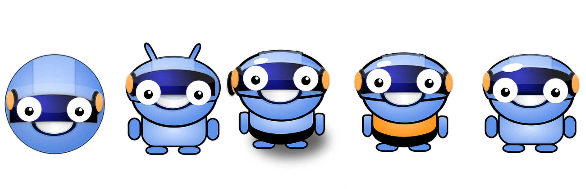

<div id="single-portfolio">
	<div id="portfolio-details" class="container">
		<a class="close-folio-item" href="#"><i class="fa fa-times"></i></a>
		
		<div class="row">
			<div class="col-sm-9">
				<div class="project-info">
					<h3>Chatbots are the Future</h3>
					<p>Chatbots are really taking over. So it was no surprise that we were approached by Sempera to design a basic prototype for their startup. They needed us to develop a user-friendly pre-chat survey for funneling the user into either sales or support.</p>
					<p>The interesting thing about chatbots is how much information is going on in such a small area. Plus, chatbots have the added issue of annoying people. By conducting SWOT analyses of other chatbots to explore the strengths and weaknesses of those which already exist, we decided that the best chat box for Sempera would need to be simple. Therefore our design stuck closely to nesting information within an intuitive sequence, so as to cut back on information overload.</p>
                    <p>The design flow was just what Sempera needed. For them, it provided the initial design to develop and implement across their platform.</p>
				</div>
			</div>
			<div class="col-sm-3">
				<div class="project-details">
					<h3>Project Details</h3>
					<p><span>Client: </span>Sempera</p>
					<p><span>Date:</span> 30 August 2016</p>
					<p><span>Tag:</span> Startup, UX Research, UI Design</p>
				</div>  
			</div>
		</div>
	</div>
</div>